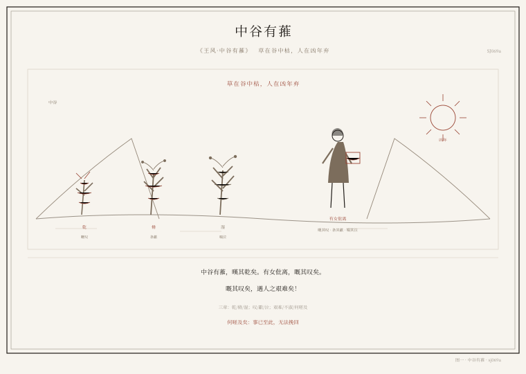
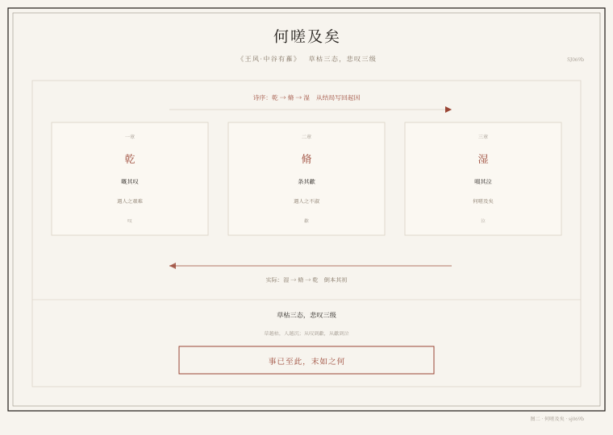

第六十九篇 中谷有蓷
王风 · 之五 SJ069
朗读 · 普通话
依经文正文朗读，句读从文；不配乐、不改速、不加拖腔。全库同一音色（豆包 TTS），非播音员录制。
一 解题
诗三判：
- 谁在说：一个在凶年被丈夫抛弃的女子。诗里的「有女仳离」，是她与丈夫别离；「嘅其叹」「条其歗」「啜其泣」，是她的悲叹一层深一层。
- 说什么事：谷中的益母草，被谷水浸着，渐渐枯干；凶年里的妇人，被丈夫厌弃，渐渐落到「何嗟及矣」。草枯三态，人悲三级。
- 为何编在此：王风第五首。前一篇《扬之水》写戍役不归，这一篇写凶年相弃；一在边地，一在家门；都不是一人之悲，都是王政之失。
《毛序》：「《中谷有蓷》，闵周也。夫妇日以衰薄，凶年饥馑，室家相弃尔。」
毛传：「兴也。蓷，鵻也。暵，菸貌。陆草生于谷中，伤于水。」「仳，别也。」「艰亦难也。」「脩，且乾也。」「条条然歗也。」「鵻遇水则湿。」「啜，泣貌。」
郑笺：「兴者，喻人居平安之世，犹鵻之生于陆，自然也。遇衰乱凶年，犹鵻之生谷中，得水则病将死。」「有女遇凶年而见弃，与其君子别离，嘅然而叹，伤己见弃，其恩薄。」「所以嘅然而叹者，自伤遇君子之穷厄。」「淑，善也。君子于己不善也。」「鵻之伤于水，始则湿，中而脩，久而乾。有似君子于己之恩，徒用凶年深浅为厚薄。」「及，与也。泣者伤其君子弃己，嗟乎，将复何与为室家乎！」
朱子《诗集传》：「兴也。蓷，鵻也。叶似萑，方茎白华。华生节间。即今益母草也。暵，燥。仳，别也。嘅，叹声。艰难，穷厄也。○凶年饥馑，室家相弃，妇人览物起兴，而自述其悲叹之词也。」
二章：「兴也。脩，长也。或曰，乾也。如脯之谓脩也。条，条然歗貌。歗，蹙口出声也。悲恨之深，不止于叹矣。淑，善也。古者谓死丧饥馑，皆曰不淑。」三章：「兴也。暵湿者，旱甚，则草之生于湿者，亦不免也。啜，泣貌。何嗟及矣，言事已至此。末如之何。穷之甚也。」
本库的看法：《中谷有蓷》是一首「荒年弃妇」的诗。
草在谷中枯，人在凶年弃；草枯三态，悲叹三级。不是一人之悲，是王政之失；不是不淑女，是遇人不淑。
先辨三物：蓷不是「推」，是益母草；中谷不是「中国」，是谷中；暵不是「干旱」，是枯干；仳离不是「仳字无义」，是离别、被弃；嘅不是「慨」的错字，是叹声；歗不是「啸」的错字，是蹙口出声；不淑不是「不贤淑」，是不善、不幸；啜其泣不是「啜饮」，是抽泣；何嗟及不是「来得及」，是嗟何及、无法挽回。
二 经文
第一章
中谷有蓷，暵其乾矣。有女仳离，嘅其叹矣。嘅其叹矣，遇人之艰难矣！
第二章
中谷有蓷，暵其脩矣。有女仳离，条其歗矣。条其歗矣，遇人之不淑矣！
第三章
中谷有蓷，暵其湿矣。有女仳离，啜其泣矣。啜其泣矣，何嗟及矣！
分章：三章，章六句。
三 韵读
| 一 |
乾/叹/难 |
寒 |
| 二 |
脩/歗/淑 |
尤/啸/屋，平去入通押 |
| 三 |
湿/泣/及 |
缉 |
《诗本音》：乾【二十五寒】、叹【二十五寒】、难【二十五寒】；脩【十八尤】、歗【三十四啸，转音萧】、淑【一屋，转音殊聊反】；湿【二十六缉】、泣【二十六缉】、及【二十六缉】。二章「以平去入通为一韵」。三章一韵到底。
四 字义与名物
字义
- 蓷（tuī）——益母草；毛传称「鵻」，朱子说「即今益母草」。
- 中谷——谷中；不是「中国」。
- 暵（hàn）——枯干；毛传「菸貌」，朱子「燥」。
- 乾——干枯；不是「乾坤」。
- 脩（xiū）——且干；朱子又训「长」，或曰「乾也，如脯之脩」。
- 湿——潮湿；三章「暵其湿」，朱子说「旱甚，则草之生于湿者亦不免」。
- 仳（pǐ）——别。
- 仳离——离别、被弃。
- 嘅（kǎi）——叹声；不是「慨」的错字。
- 叹——叹息。
- 艰难——穷厄；指丈夫穷困。
- 条——条然。
- 歗（xiào）——蹙口出声；长啸。
- 不淑——不善、不幸；不是「不贤淑」。
- 啜（chuò）——泣貌；抽泣。
- 何嗟及——嗟何及；事已至此，无法挽回。
- 君子——丈夫。
- 遇人——遇到的那个人，指丈夫。
- 闵周——忧周、怜周。
名物
- 蓷——益母草；叶似萑，方茎白华，华生节间。
- 谷——两山之间的水道；蓷宜生高陆，今在谷中，受水而病。
- 凶年饥馑——荒年；谷不熟曰饥，蔬不熟曰馑。
五 今译
第一章
谷中有益母草，被水浸得枯干了。有个女子被弃离别，一声声长叹。一声声长叹，是遇上了丈夫的穷厄！
第二章
谷中有益母草，被水浸得半干了。有个女子被弃离别，蹙口长啸。蹙口长啸，是遇上了丈夫的不善！
第三章
谷中有益母草，连湿处也被晒干了。有个女子被弃离别，抽抽噎噎地哭。抽抽噎噎地哭，事已至此，嗟叹也来不及了！
说明：「暵其乾/脩/湿」今译作「枯干/半干/连湿处也干」；「嘅其叹」作「长叹」；「条其歗」作「长啸」；「啜其泣」作「抽噎地哭」；「何嗟及」作「嗟叹也来不及」。
六 章旨
一章：乾—叹—艰难。
草已枯干，女子长叹；叹的是「遇人之艰难」。
二章：脩—歗—不淑。
草已半干，女子长啸；啸的是「遇人之不淑」。
三章：湿—泣—何嗟及。
连湿处也干了，女子抽泣；泣的是「何嗟及矣」。
三章合看：草枯三态，悲叹三级。
诗序从「乾」写到「湿」，是从最重的结果写起，再倒回初因；实际次序是「湿→脩→乾」。孔疏说「先举其重，然后倒本其初」。诗从枯写到湿，是从结局写回起因；人从叹到泣，是从悲叹落到无及。
七 诗教
- 兴：朱子标「兴也」。蓷在谷中受水而枯，兴妇人在凶年被弃；草失其所，人失其家。
- 观：观荒年——凶年饥馑，室家相弃；观夫妇衰薄——恩情日薄，遂至相弃；观王政之失——范氏说「世乱则室家相弃者，上之所残也」；观「一女见弃，而知人民之困」。
- 群：可与弃妇同群，与荒年流离者同群。诗不写「恨」，只写「叹」「歗」「泣」；怨在物象里。
- 怨：曾氏说诗人「无怨怼过甚之词焉，厚之至也」。怨而不怒，不是没有怨，是把怨收在草枯人弃的影子里。
八 分寸与边界
- 不可把「蓷」当「推」。蓷音 tuī，是益母草。
- 不可把「中谷」当「中国」。中谷是谷中。
- 不可把「暵」只当「干旱」。暵是枯干；毛传「菸貌」，朱子「燥」。
- 不可把「乾」当「乾坤」。乾是干枯。
- 不可把「脩」当「修养」。脩是且干；朱子又训「长」，或曰「如脯之脩」。
- 不可把「湿」只当「湿气」。三章「暵其湿」，是连湿处也晒干。
- 不可把「仳离」当「仳字无义」。仳是别，仳离是离别、被弃。
- 不可把「嘅」当「慨」的错字。嘅是叹声。
- 不可把「条其歗」当「条条地叫」。条是条然，歗是蹙口出声、长啸。
- 不可把「不淑」当「不贤淑」。不淑是不善、不幸；朱子说「死丧饥馑，皆曰不淑」。
- 不可把「啜其泣」当「啜饮」。啜是泣貌，是抽泣。
- 不可把「何嗟及」当「来得及」。何嗟及是嗟何及，事已至此，无法挽回。
- 不可把「君子」当泛称「有德者」。此处君子是丈夫。
- 不可把「遇人」当「遇到路人」。遇人是遇到的那个人，指丈夫。
九 存疑
- 诗旨：毛序「闵周，夫妇日以衰薄，凶年饥馑，室家相弃」；朱子「凶年饥馑，室家相弃，妇人览物起兴」；范氏以「世乱则室家相弃者，上之所残也」归到王政。本库两存：诗面是弃妇，诗教是闵周。
- 「蓷」：毛传「鵻也」，朱子「即今益母草」。本库取益母草，并存毛传。
- 「暵」：毛传「菸貌」，朱子「燥」。本库取枯干，并存「菸貌」。
- 「脩」：毛传「且乾也」，朱子「长也；或曰乾也，如脯之谓脩也」。本库取「且干」，并存「长」。
- 「湿」：毛传「鵻遇水则湿」，郑笺「始湿、中脩、久乾」，朱子「旱甚，则草之生于湿者亦不免」。一为倒叙，一为旱极；本库两存。
- 「条其歗」：毛传「条条然歗也」，朱子「条然歗貌，蹙口出声」。本库取长啸。
- 「不淑」：郑笺「淑，善也，君子于己不善」，朱子「死丧饥馑皆曰不淑」。本库取「不善、不幸」，两存。
- 「何嗟及」：郑笺「及，与也，将复何与为室家乎」，朱子「事已至此，末如之何」。本库取「嗟何及、无法挽回」，并存郑笺。
- 「遇人」：毛、郑、朱均指丈夫；后世有解作「遇到的人」泛称者。本库取丈夫。
- 诗作年代：孔疏以平王时；本库从之。
十 跨典
- 《王风·扬之水》：前一篇。戍役不归，归期不由己；此篇凶年相弃，室家不由己。一在边地，一在家门。
- 《王风·君子于役》：夫妻离别，尚有望归；此篇夫妻相弃，已至无及。一「曷至哉」，一「何嗟及矣」。
- 《小雅·苕之华》：「人可以食，鲜可以饱。」荒年饥馑，与此篇「凶年饥馑，室家相弃」同调。
- 《孟子·梁惠王》：「凶年饥岁，君之民老弱转乎沟壑。」王政失养，民先受困；此篇以一女见弃，见人民之困。
- 范氏说：「世治则室家相保者，上之所养也；世乱则室家相弃者，上之所残也。」此篇「闵周」的落点，不在弃妇一人，而在王政。
十一 双卡与图
双卡十四对：
| 蓷（益母草，tuī） |
蓷（推，误） |
| 中谷（谷中） |
中谷（中国，误） |
| 暵（枯干） |
暵（干旱，误） |
| 乾（干枯） |
乾（乾坤，误） |
| 脩（且干/长） |
脩（修养，误） |
| 湿（潮湿） |
湿（湿气，误） |
| 仳离（离别/被弃） |
仳离（仳字无义，误） |
| 嘅（叹声） |
嘅（慨字错写，误） |
| 条其歗（长啸） |
条其歗（条条叫，误） |
| 不淑（不善/不幸） |
不淑（不贤淑，误） |
| 啜其泣（抽泣） |
啜其泣（啜饮，误） |
| 何嗟及（嗟何及） |
何嗟及（来得及，误） |
| 君子（丈夫） |
君子（泛称，误） |
| 遇人（丈夫） |
遇人（路人，误） |

图一 · 中谷有蓷 草在谷中枯，人在凶年弃

图二 · 何嗟及矣 草枯三态，悲叹三级
读图三处：
- 草与谷：图一，蓷宜生高陆，却在谷中受水；草失其所，人失其家。
- 枯与悲：图一，乾、脩、湿三株草，对应叹、歗、泣三级；草越枯，人越沉。
- 诗序与实际：图二，诗从乾写到湿，是从结局写回起因；实际是湿→脩→乾。倒本其初，才见「何嗟及矣」。